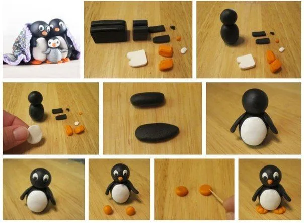
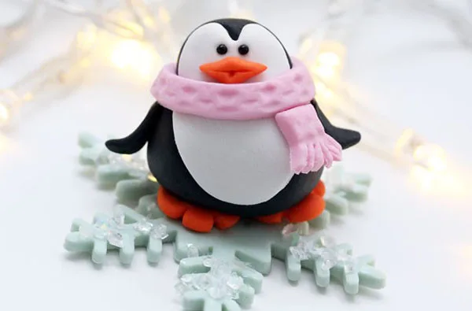
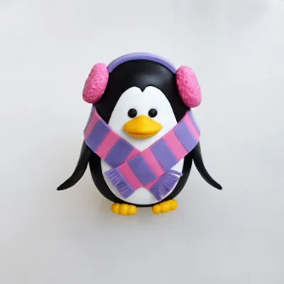

Гарний торт – незамінний атрибут дитячого свята! Звичайно, можна замовити готовий, а можна разом з дитиною зробити цікаві фігурки тварин. Пінгвін з мастики стане оригінальною і красивою прикрасою для торта на дитячий день народження.
Що знадобиться для роботи
Для того щоб зробити невеликих мастичних пінгвінчиків, знадобиться:
- Мастика. Її можна приготувати самостійно. Досить подивитись відео майстер-класу по її виготовленню. Або ж придбайте готову суміш.
- Зубочистка. З її допомогою зручно створювати тонкі деталі і промальовувати фактуру.
- Ніж або будь-який інший предмет, за допомогою якого буде зручно відокремлювати невеликі шматочки мастики.
Інструменти, використовувані для ліплення фігурок тварин з мастики, можна замінити будь-якими іншими підручними засобами. Наприклад, замість зубочистки використовуйте заточений сірник або спицю.
Порядок і технологія виготовлення фігурки пінгвіна
Щоб було легше ліпити з мастики фігурки пінгвінів, всю роботу слід розділити на кілька етапів.
1. Підготовчі роботи
- Вимити руки. Так як фігурки є їстівною прикрасою, приступати до роботи потрібно, ретельно вимивши руки.
- Нарізати мастику.
Для виготовлення одного пінгвіна знадобляться:
- 1 невеликий шматок чорної мастики для голови;
- 1 великий шматок для тіла;
- 2 шматочки для крил;
- 2 невеликих шарика помаранчевої маси для лапок;
- трохи білої – для животика і очей;
- помаранчевої – для дзьоба;
- рожева і фіолетова мастика – для шарфика.
Важливо!
Кількість мастики, необхідної для виготовлення фігурки, залежить від розмірів декору. Не варто робити її занадто великою, так як така прикраса буде виглядати громіздко.
2. Як зробити фігурку

- З самого великого шматка чорного кольору скачати овал – він буде тулубом пінгвіна. Зі шматочка поменше зліпити кулю і з’єднати її з овалом.
- З двох маленьких частин скачати невеликі ковбаски з закругленнями на кінцях і трохи сплюснути їх так, щоб вийшли крила.
- З білої мастики скачати кулю, розплющити її в млинець і наліпити на заготовку тулуба таким чином, щоб вийшов білий животик. З двох білих кульок розміром з половину сірникової головки зробити очі, а з помаранчевого шматочка виліпити дзьоб.
- Скачати з помаранчевої маси дві кульки і злегка сплющити їх. За допомогою зубочистки на лапах продавити смужки – перетинки.
- Прикріпити крила і лапи до тулуба.
Важливо!
Щоб з’єднати деталі з мастики одна з одною, використовуйте невелику кількість води. Слід наносити рідину пензликом або пальцем.
3. Як зліпити шарф
Шарф для їстівної фігури пінгвіна можна зробити двома способами:

- Розкачати з рожевої мастики дві ковбаски: одну довгу для шарфа, іншу маленьку для його кінчика. Сплюснути їх, зубочисткою нанести малюнок, що імітує фактуру в’язаного шарфа, при цьому кінчик маленької заготовки нарізати, щоб вийшла бахрома. Великою заготівкою обернути шию пінгвіна, а маленьку прикріпити під нею знизу.

Розкачати довгу ковбаску і сплюснути її. Нанести на заготовку шарфа перпендикулярні смуги з мастики контрастного кольору, кінці нарізати або прикріпити зроблену окремо бахрому. Обернути шию пінгвіна, закріпивши шарф внапусток спереду.
Ідея!
Можна проявити фантазію і прикрасити торт декількома фігурками пінгвінів, придумавши їм цікаві деталі одягу та аксесуари.
Таким чином, зробити прикрасу з мастики своїми руками можна досить просто і швидко.